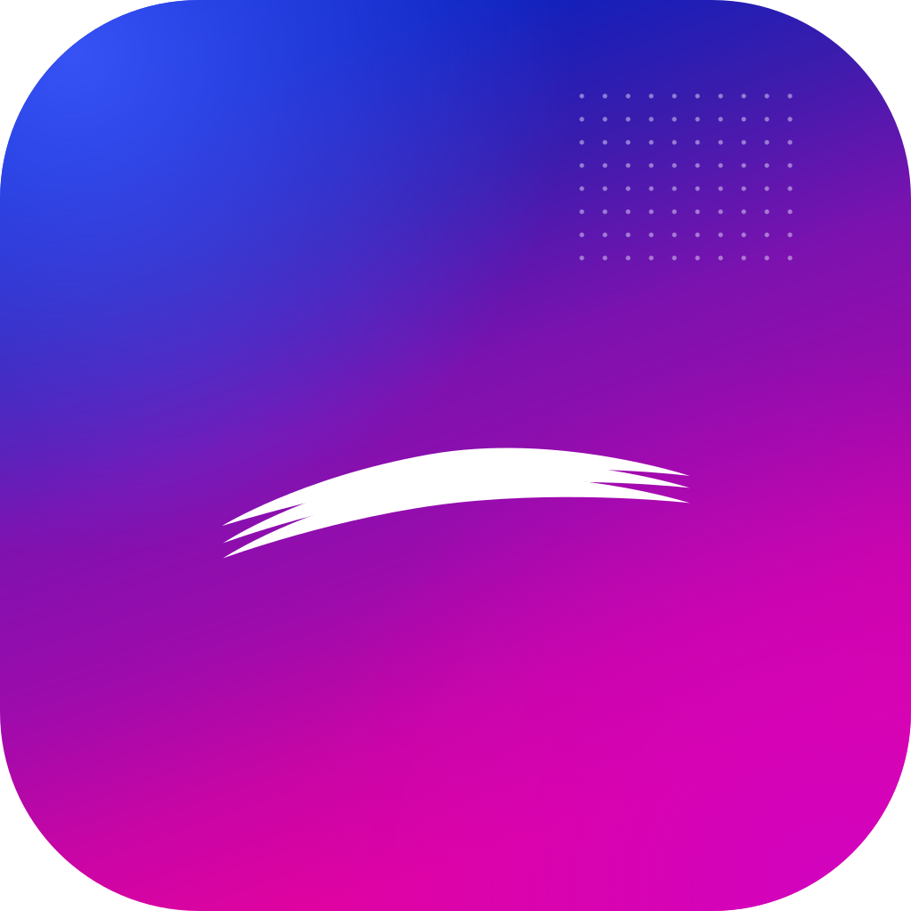
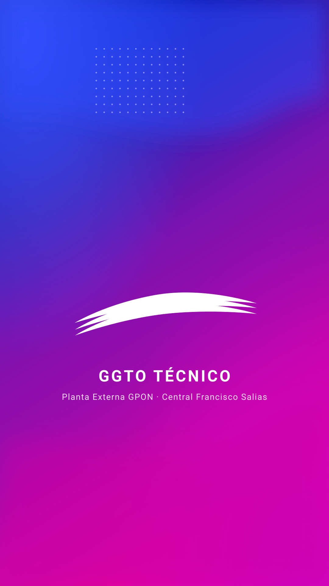

Propuesta de interfaz · APK
Mismo sistema de marca que la web (degradado azul eléctrico → violeta → magenta, trama de puntos y logotipo monocromo blanco), traducido a Material 3 y a las condiciones reales de campo: una mano, guantes, sol directo y trabajo sin conexión.


La app usa hoy assets/logo_CANTV.webp. La propuesta rasteriza estos vectores a
WebP por densidad (1x/2x/3x) en vez de añadir flutter_svg: mismo resultado visible,
cero dependencias nuevas.
#021FBE#0B1BB4#6A13A1#C905A5#00B8C4#050B3D#F4F7FC#131A2A · 16,2:1Estados del caso. Los iconos de hoy usan constantes de Material que no alcanzan el 4,5:1 que exige RNF-APK-05. La propuesta conserva el icono (D-101) y cambia la tinta:
| Estado | Hoy (icono sobre blanco) | Propuesta (tinta sobre fondo) | Veredicto |
|---|---|---|---|
| Nuevo / Asignado | #2196F3 · 3,12:1 | #0B1BB4 sobre #E7ECFF · 9,75:1 | AA |
| Contactado | #FF9800 · 2,16:1 | #8A6100 sobre #FFF4D6 · 5,06:1 | AA |
| Citado | #9C27B0 · 6,30:1 | #6A13A1 sobre #F3E9FB · 8,04:1 | AA |
| Diferido | #F44336 · 3,68:1 | #B3261E sobre #FDECEA · 5,72:1 | AA |
| Cerrado | #4CAF50 · 2,78:1 | #1F7A4D sobre #E6F5EC · 4,72:1 | AA |
| Desconocido | #9E9E9E · 2,68:1 | #5A6684 sobre #EEF3FD · 5,14:1 | AA |
3 de los 10 colores actuales incumplen RNF-APK-05 y 4 más quedan en el límite. Los 10 propuestos pasan
(4,72:1 – 9,75:1). Verificación reproducible en scripts/contraste_apk.py.
| Token | Valor | Uso |
|---|---|---|
| displaySmall | 36 / 44 · 700 | Cifra grande de la cubierta |
| headlineSmall | 24 / 32 · 700 | Título de pantalla |
| titleLarge | 22 / 28 · 700 | Barra de aplicación |
| titleMedium | 16 / 24 · 600 | Título de tarjeta |
| bodyLarge | 16 / 24 · 400 | Cuerpo mínimo (RNF-APK-05) |
| bodyMedium | 14 / 20 · 400 | Secundario |
| labelSmall | 11.5 / 16 · 700 | Solo chips y pestañas |
| — | 48 dp | Objetivo táctil mínimo |
| — | 16 / 12 / 8 dp | Radios (tarjeta / control / chip) |
| — | 150 ms | Micro-interacciones |
Hoy — inicio_gestion_screen.dart:55-100
| Rol | Destinos en la barra inferior |
|---|---|
| SUPER / ADMIN / SUPERVISOR | Monitoreo · Especiales · GESTIÓN · Casos · Despacho (5) |
| COORDINADOR | Monitoreo · Especiales · Alertas · Mensajes (4) |
| TECNICO | Sin barra inferior: 5 acciones en la barra de título |
Si en el próximo incremento el Coordinador gana «GESTIÓN», la barra llega a 7 destinos: por debajo de 48 dp de ancho, etiquetas ilegibles en 360 dp.
Propuesta — máximo 5, el resto en «Más» (hoja inferior)
| Rol | Barra inferior | En «Más» |
|---|---|---|
| TECNICO | Casos · Alertas · Mensajes · Perfil | Sincronización · Masivas · Cuenta |
| SUPERVISOR / ADMIN / SUPER | Monitoreo · Especiales · Casos · Despacho | Gestión · Masivas · Mensajes · Ajustes |
| COORDINADOR | Monitoreo · Especiales · Coordinación · Mensajes | Alertas · Casos · Ajustes |
Cada destino conserva ≥ 74 dp de ancho en un equipo de 360 dp, el pulgar alcanza todo sin cambiar de mano y las acciones de la barra de título bajan de 5 a 2 (sincronizar + perfil).
Botones · 48 dp de alto
Conexión y sincronización
Chispas de estado, campos y hoja inferior
IconButton ya cumplen (48 dp), los chips deben subir de 32 a 34–40 dp.semanticsLabel (D-101) y, en la ficha, la etiqueta textual.El teléfono muestra teléfonos, direcciones y seriales. La propuesta añade una máscara visual
(«70••••21») y el sello «datos protegidos» en la cabecera, para que la captura de pantalla y el
préstamo del equipo sean evidentemente riesgosos. FLAG_SECURE ya está decidido.
El degradado y la trama se dibujan con LinearGradient y
CustomPaint: 0 KB de imágenes de fondo. Los únicos recursos nuevos son el icono del
arranque (≈ 40 KB en WebP) y el logotipo monocromo (≈ 12 KB por densidad).
Hay credencial guardada para este P00. PIN de fábrica 824605: cámbielo al entrar.
Aviso de uso restringido aceptado · versión 1.4.0+13
Central Francisco Salias · Área 4
Falla reportada
NAVEGACION LENTA
ONT intermitente. El suscriptor reporta cortes desde el 09/10.
Lo que ve depende de su rol. Capture pantallas solo si el procedimiento lo exige.
La foto 1 del caso 202610148290 falló 5 veces. Reintentar manualmente o volver a tomarla.
POR ENVIAR
3 acciones
Última descarga hoy 06:12 · credencial sin conexión vigente 11 h
| Acción | Caso | Estado |
|---|---|---|
| Cambio de estado | …148313 | En cola |
| Evidencia | …148290 | Error · 5/5 |
| Cierre de caso | …148307 | Enviando |
Progreso del lote en curso
Tras 24 h sin renovar la credencial, la app pedirá señal para volver a validar el PIN.
CASOS ACTIVOS
1 284
▼ 4,2 % vs. ayer
Sin asignar
216
12 más que ayer
Cuadrilla 0
87
Modo supervisor
Cumplimiento SLO
93,6 %
meta 95 %
Sectores Los Chaguaramos y Santa Mónica.
| Cuadrilla | Asignados | Cerrados |
|---|---|---|
| C-03 · Zona norte | 32 | 28 |
| C-07 · Zona sur | 21 | 11 |
Producción semanal…
Las pantallas que no caben en la barra inferior, sin apilar iconos en la barra de título.
TSTCDPB · TÉCNICO
Cuadrilla 3 · Los Chaguaramos
Su versión es igual o más reciente que la publicada.
Hay una versión más reciente (compilación 13 > 12).
SHA-256: 7120b5a004cc94b8a92f5b7166ca5d864e0150c09a1fb97405b442e89a152f51